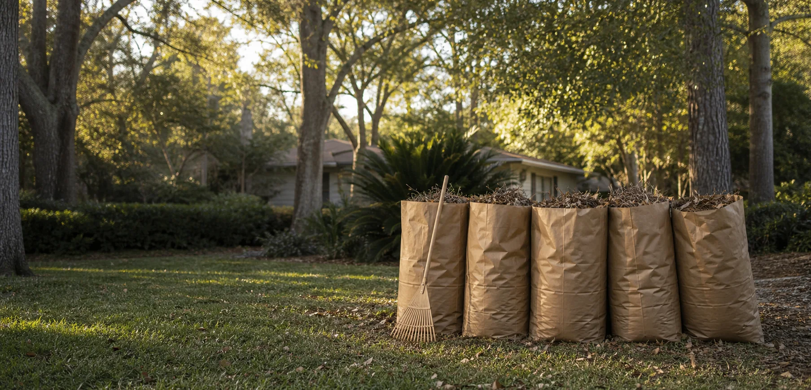

Leaf cleanup
Raking loose leaves into tidy piles and helping fill paper lawn bags.

Kid-powered yard help · Switzerland, FL
Jude is eight, ready to work, and excited to help neighbors keep their yards happy—one leaf bag at a time.
Small business. Big heart.
Little Sprout Yard Co. is a tiny neighborhood startup with a simple mission: learn the value of hard work, help the people nearby, and leave every yard a little better than he found it. Every job is arranged and supervised by a parent.
Ways Jude can help
Raking loose leaves into tidy piles and helping fill paper lawn bags.
Gathering small fallen sticks and pinecones to help clear the lawn.
Sweeping front walks, patios, and porches with kid-sized determination.
Giving thirsty porch and garden plants a careful drink.
Light, age-appropriate jobs only. No mowers, power tools, chemicals, or heavy lifting.
Meet the owner
I'm eight years old, I like being outside, and I'm starting my very first business.
I want to learn how to work hard, save money, and help my neighbors. My favorite jobs are filling up big leaf bags and seeing how clean a yard looks when we're finished.
“I’m ready to help!”
— Jude, founder & chief leaf officer
Jude's work
We're just getting started. Check back soon for real before-and-after photos from Jude's neighborhood jobs.
Before
New yardAfter
Fresh & tidyClose to home
Not sure if you're nearby? Have a parent reach out—we'd love to hear where you are.
Need a little yard help?
Tell Jude's parent what you need help with, where you're located, and a day that works for you.
Parent / guardian contact
Phone (904) 555-0147 placeholder Email hello@judesyardco.example placeholderReplace these placeholders with a parent or guardian's contact details before sharing the site with customers.